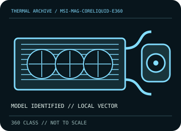

[ INDIVIDUAL COMPONENT // COOLING ]
MSI MAG CORELIQUID E360
360 mm ARGB AIO with 394 × 119.2 × 27 mm radiator, 3,000 rpm pump, and 550 mm control leads.

IDENTIFICATION: Match the complete model, regional SKU, revision, and supplied socket kit. Similar names and radiator classes do not guarantee identical brackets, dimensions, leads, or warranty terms.
Manufacturer specifications and compatibility
| Exact model / listing | MSI MAG CORELIQUID E360 |
|---|---|
| Radiator dimensions and thickness | 394 × 119.2 × 27 mm aluminum radiator; allow approximately 52 mm for a 25 mm fan stack and further fitting clearance. |
| Fans | 3 × 120 × 25 mm FDB fans; 4-pin PWM, ARGB lighting, rated fan life 50,000 hours at 40 °C. Use the range on the exact revision’s MSI spec sheet. |
| Pump / block | 3,000 rpm ±10%, rated 50,000 hours; copper cold plate. |
| Supported CPU sockets | Intel LGA 1150 / 1151 / 1155 / 1156 / 1200 / 1700 / 1851; AMD AM5 / AM4 / TR4 / sTRX4. Confirm the socket-specific hardware supplied. |
| Tube length / construction | Reinforced, sleeved rubber tubing with swiveling radiator fittings; check physical reach before securing the radiator. |
| Power, fan, lighting, and display connectors | 4-pin PWM fan/pump leads, 5 V ARGB connector, and included fan-splitter/adapter harnesses; follow MSI cable labels. Do not attach 5 V ARGB to a 12 V header. |
| Warranty | MSI regional warranty terms control; confirm coverage duration for the exact MAG CORELIQUID E360 SKU in the purchase region. |
| Case compatibility | Requires support for a 360 mm radiator; allow about 52 mm with fans and account for rotating fittings and hose bend. Check case rail, top clearance above DIMMs/VRM shrouds, and GPU. |
| Motherboard compatibility | Supports listed Intel/AMD sockets only with the correct kit. Confirm PWM header current limits and availability of a 5 V ARGB header/controller; board headers vary by model. |
Warranty, maintenance, and safe installation
Closed-loop cooler: do not open or refill. Clean with power off and fan blades restrained; inspect reinforced hoses and radiator fittings periodically. Stop use if coolant is visible, pump operation changes, or CPU temperature rises unexpectedly.
- Install only with the model-specific manual and included retention hardware. Do not operate a pump dry or allow tubes to kink or rub against sharp edges.
- After installation, verify pump and fan tachometer/control operation and monitor CPU temperature under a repeatable load before normal service.
- Warranty statements are a reference, not a substitute for current regional terms; preserve the serial number and purchase record and contact the manufacturer for service.
Manufacturer sources
- MSI — MAG CORELIQUID E360 specificationsManufacturer dimensions, fans, pump, sockets, cable, and electrical specifications.
- MSI — MAG CORELIQUID E360 support and manual downloadsManufacturer product-specific manuals, installation guidance, and support files.
Static catalog reference only. Verify the precise SKU, manual revision, and current local warranty documentation before installation.